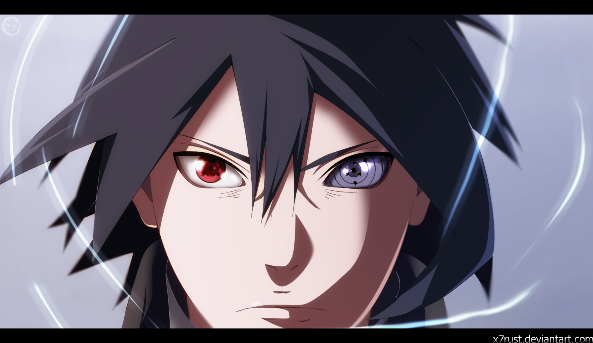
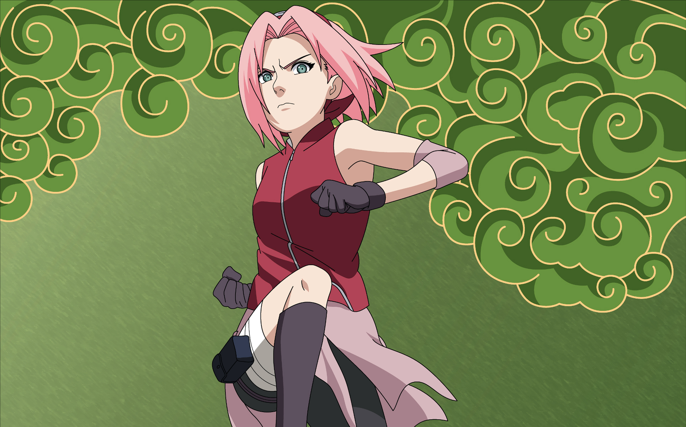
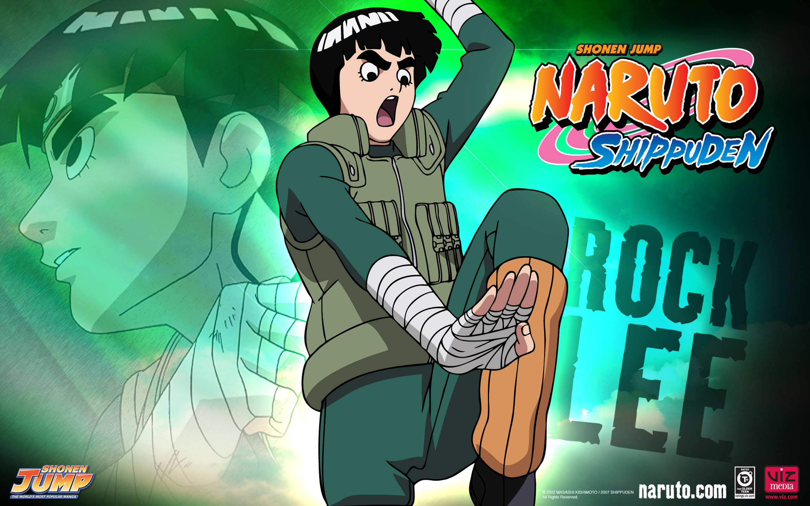

Naruto Wikipedia
Naruto Uzumaki

Naruto Uzumaki (うずまきナルト, Uzumaki Naruto) is a shinobi of Konohagakure's Uzumaki clan. He became the jinchūriki of the Nine-Tails on the day of his birth — a fate that caused him to be shunned by most of Konoha throughout his childhood. After joining Team Kakashi, Naruto worked hard to gain the village's acknowledgement all the while chasing his dream to become Hokage. In the following years, through many hardships and ordeals, he became a capable ninja, regarded as a hero both by the villagers, and soon after, the rest of the world, becoming known as the Hero of the Hidden Leaf (木ノ葉隠れの英雄, Konohagakure no Eiyū, literally meaning: Hero of the Hidden Tree Leaves). He soon proved to be one of the main factors in winning the Fourth Shinobi World War, leading him to achieve his dream and become the village's Seventh Hokage (七代目火影, Nanadaime Hokage, literally meaning: Seventh Fire Shadow).
Sasuke Uchiha
Sasuke Uchiha (うちはサスケ, Uchiha Sasuke) is one of the last surviving members of Konohagakure's Uchiha clan. After his older brother, Itachi, slaughtered their clan, Sasuke made it his mission in life to avenge them by killing Itachi. He is added to Team 7 upon becoming a ninja and, through competition with his rival and best friend, Naruto Uzumaki, Sasuke starts developing his skills. Dissatisfied with his progress, he defects from Konoha so that he can acquire the strength needed to exact his revenge. His years of seeking vengeance and his actions that followed become increasingly demanding, irrational and isolates him from others, leading him to be branded as an international criminal. After learning the truth of his brother's sacrifice, later proving instrumental in ending the Fourth Shinobi World War, and being happily redeemed by Naruto, Sasuke decides to return to Konoha and dedicate his life to help protect the village and its inhabitants, becoming referred to as the "Supporting Kage" (支う影, Sasaukage, literally meaning: Supporting Shadow).
Sakura Haruno
Sakura Uchiha (うちはサクラ, Uchiha Sakura, née Haruno (春野)) is a kunoichi of Konohagakure. When assigned to Team 7, Sakura quickly finds herself ill-prepared for the duties of a shinobi. However, after training under the Sannin Tsunade, she overcomes this, and becomes recognised as one of the greatest medical-nin in the world.
Kakashi Hatake

Kakashi Hatake (はたけカカシ, Hatake Kakashi) is a shinobi of Konohagakure's Hatake clan. Famed as Kakashi of the Sharingan (写輪眼のカカシ, Sharingan no Kakashi), he is one of Konoha's most talented ninja, regularly looked to for advice and leadership despite his personal dislike of responsibility. To his students on Team 7, Kakashi emphasises the importance of teamwork; he himself received this lesson, along with the Sharingan, from his childhood friend, Obito Uchiha. After the Fourth Shinobi World War, Kakashi becomes Konoha's Sixth Hokage (六代目火影, Rokudaime Hokage, literally meaning: Sixth Fire Shadow).
Rock lee
Rock Lee (ロック・リー, Rokku Rī) is a shinobi of Konohagakure's Lee clan and a member of Team Guy. Unlike most shinobi, he lacked the skills necessary to use ninjutsu or genjutsu. However, he overcomes those shortcomings by undergoing special training from Might Guy that would make him a taijutsu master while still a genin.